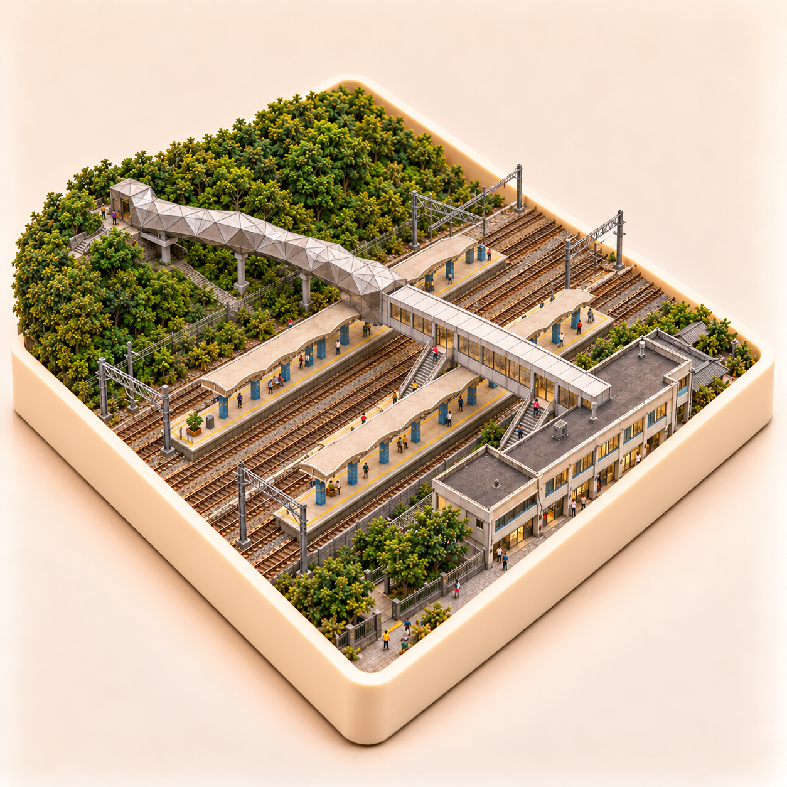
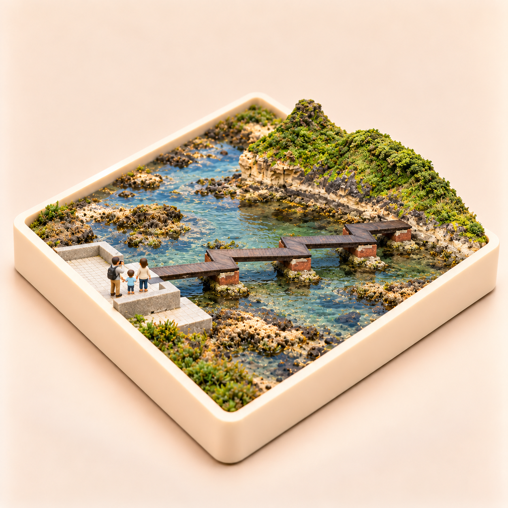

鹿港老街
review-v5.png・自檢完成，待你確認
你的意見：修正基座的不規則, 要跟其他模型一樣為方形有圓角。
保留老街建築與人物，重整為四邊小圓角方形基座，移除不規則外框。
開啟實景比較 · 完整 prompt5 張新預覽：鹿港、猴硐、田尾、和平島與六十石山。其他選圖及 App 圖片保持原樣。猴硐以歷史實照核對月台結構，非最新現況測繪，貓橋接點仍為微縮簡化。
你的意見：修正基座的不規則, 要跟其他模型一樣為方形有圓角。
保留老街建築與人物，重整為四邊小圓角方形基座，移除不規則外框。
開啟實景比較 · 完整 prompt
你的意見：月台設計有問題, 上方的管道其實是月台的通行到～所以是有跨越月台的～月台的設計也不符合真實狀況
依兩座島式月台、跨站旅客通道及下接月台樓梯重新製作，站房回到山坡對側；保留藍柱與波浪雨棚。歷史照片用於結構核對，非 2026 現況測繪；貓橋與旅客通道接點仍為微縮簡化。
開啟實景比較 · 完整 prompt
你的意見："田路花園" 是錯的, 應該是 "公路花園", 有實際照片可以參考
石牆四字已核對為「公路花園」；直立牌保留「田尾／公路／花園」，其餘景物不變。
開啟實景比較 · 完整 prompt
你的意見：基座應該是方形有圓角, 請修正。 水平還是有問題, 不應該往遠方向下傾斜
改為小圓角方形底座，調整觀看方位，木橋由左往右橫跨潮池，橋面保持同一高度，避免向遠方下傾的視覺。
開啟實景比較 · 完整 prompt
你的意見：修正方形小圓角基座，保留擴大花坡取景。
已修正大切角，改為四邊等長的小圓角方形基座；保留擴大的金針花坡、步道與涼亭。
開啟實景比較 · 完整 prompt